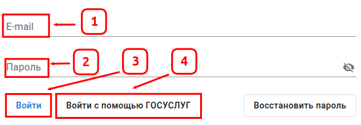

Для авторизации в геоинформационной системе Вам, требуется логин / адрес электронной почты (E-mail) и пароль выданной
Вам учетной записи на портале.
Для входа в учётную запись на портале, требуется:
-
Запустить приложение через браузер, для этого требуется ввести интернет-адрес геоинформационной системы в адресной
строке браузера.
- Ввести данные от учетной записи.
- Нажать Войти для авторизации системы.
